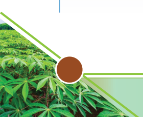

Agriculture for Secondary Schools
Activity 1.6
1. Visit a school farm or nearby crop fields, then perform the following tasks:
(a) Observe different nutrients management practices employed in the field;
(b) Participate in carrying out some of the management practices employed
to the crop plants;
(c) Adopt any two best practices, and apply them to crop plants in the school
farm.
2. Summarise the lesson learned from this activity, in your portfolio.
Loss of soil fertility
Nutrients in the soil can be depleted, making the soil infertile enough to affect
crop productivity. There are various means by which soil can lose its fertility.
The most common causes of loss of soil fertility include soil erosion, burning of
vegetation cover, water logging, leaching, flooding, and crop removal through
continuous cropping and grazing. Others include changes in soil pH due to
poor agronomic practices, accumulation of salts, volatilisation, and use by soil
microorganisms.
Methods of maintaining soil fertility
There are various practices by which soil fertility can be retained in the soil.
These include:
(a) The use of good agronomic practices (GAPs) such as crop rotation,
mulching, contour farming, proper irrigation, intercropping, agroforestry,
reforestation, and use of cover crops and windbreaks;
(b) Use of materials containing organic matters; and
(c) Use of materials containing plant-concentrated nutrients in the soil.
Activity 1.7
1. Visit a school farm or some nearby crop fields and or use a library/online
sources /video clips to study the following:
(a) Different ways through which soil can lose its fertility; and
(b) Various methods used to restore/ improve soil fertility.
10
Student’s Book Form Two